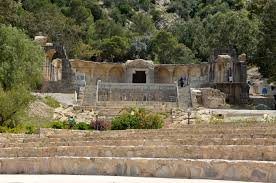

Temple des Eaux
Le Temple des Eaux de Zaghouan, construit au IIe siècle par les Romains, est un monument exceptionnel dédié aux sources qui alimentaient Carthage via un aqueduc de 132 km. Ce sanctuaire nymphée, avec ses douze niches semi-circulaires, est un chef-d'œuvre de l'architecture hydraulique romaine.